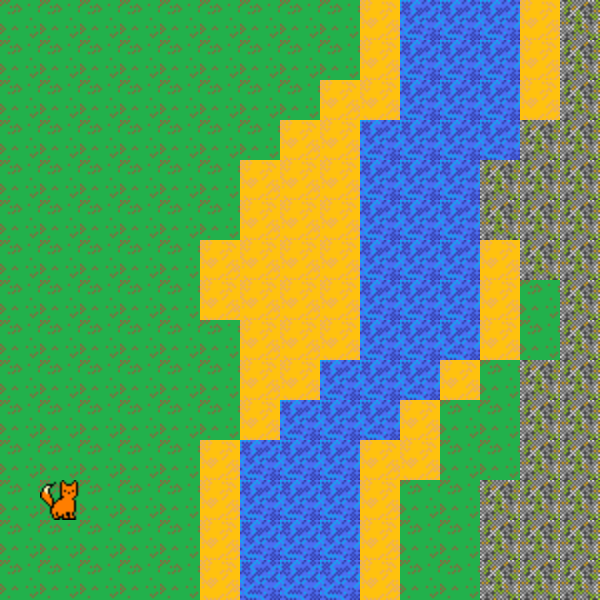
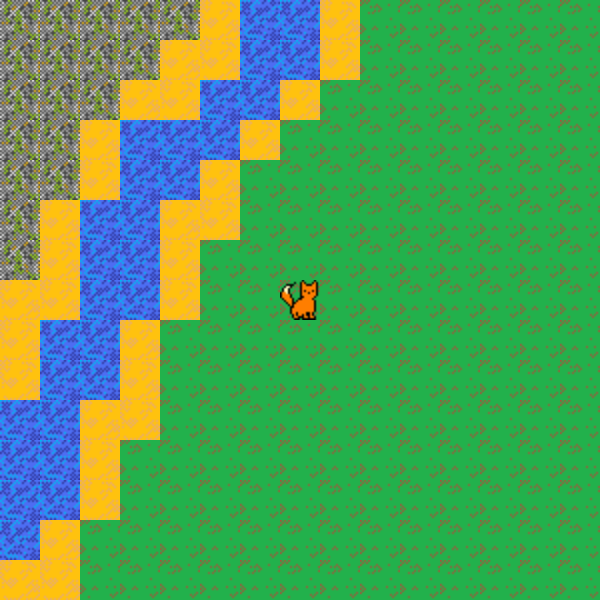

Your sketch:
The assets folder contains two .txt files. Each of these files describes the location of image sprites in a scene (see the images below). The sprite images are also stored in the assets folder. Each line in a scene text file includes the name of a sprite and its x and y coordinates separated by commas. For example, the last line in scene1.txt is:
foxcat,20,240
This means that foxcat.png should be displayed at 20, 240 on the canvas.
sketch.js contains most of the code for creating the scene. Your task is to complete
the createSprites() function to parse the information in a scene text file to display
the sprites and create the scene. For each line in the file, your code should create a new instance
of the Sprite class and push it to the sprites global array.
The first step is to split the text in each line into its component parts. Remember that all parts of
the text will be string data types, even the numbers. You can convert a numeric strings, e.g. "20", to
an integer using JavaScript's parseInt() function.
Read the existing code before starting to write your own! There is no need to edit or add any
code outside of the createSprites() function.
Your code should work for both scene text files. Test it out by loading scene2.txt instead of scene1.txt.
Expected output (scene1.txt):

Expected output (scene2.txt):

You only need to add code inside the createSprites() function.
You will need a for loop to iterate through each line in the tiles
parameter, which contains the lines of the loaded scene text file.
Inside the for loop, use the split() function
to separate the data stored in each line.
Convert the numeric data in the array returned by split() into whole numbers using the parseInt() function.
Use the data to create a new Sprite object. All the information you need on how to do this is present in the code. You will
need a conditional to determine which image to pass to the Sprite constructor. For example, if the sprite name in the
text file is "grass", you should pass the grass image object.
Finally, add the new Sprite to the sprites array.